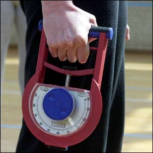
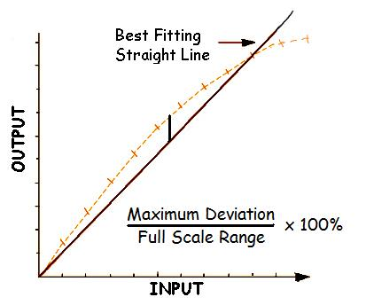
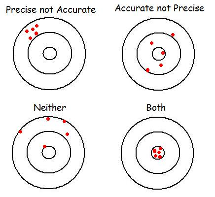
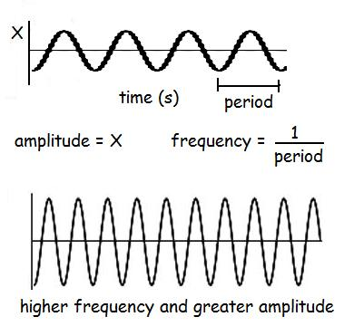
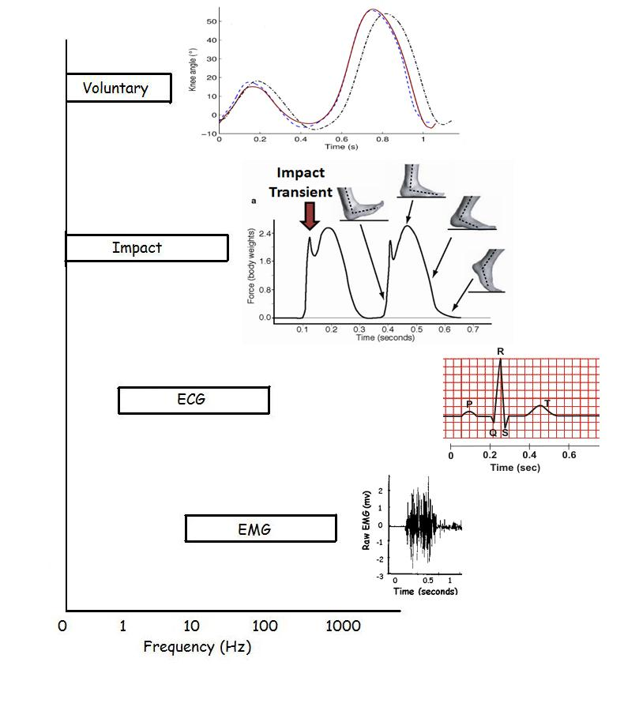

Properties of Transducers
A transducer is a device that transforms one form of energy into another while maintaining important characteristics. It is a major component of the measurement chain because it is the device that we use to acquire data (see Measurement Chain Lab).
Sensitivity:

The sensitivity of a transducer is the ratio of output/input. If we take the example of the hand grip dynamometer pictured to the right, we can see that the transducer measures grip strength by converting the gripping force to an angular displacement of the needle. This particular dynamometer has a needle that rotates 180 degrees for an applied force of 90 kg (883 N). The sesitivity is 2 degrees per kg. This is quite appropriate for adults but if we use the same transduer on children who can only generate 10 kg of grip strength, we should use a dynamometer with greater sensitvity. If we used a dynamometer that rotated 180 degrees for an applied force of 20 kg, it would have a sensitivity of 9 degrees per kg. This transducer would be too sensitive for football players who would surely break the instrument. Therefore, care should be taken to match the sensitivity of the transducer to the phenomenon being measured.
Linearity:
If we were to calibrate the sensitivity of the hand grip dynamometer, we could hang known masses and measure the angular displacement of the needle. We would expect that the needle movement is proportional to the applied load but this may not be the case. The figure to the right shows a graph that might result for any transducer. Known inputs are applied to the transducer and the outputs are recorded. The orange line is drawn through the measurements and we can see that the line is not perfectly straight. This means that the transducer is not perfectly linear and the output is not directly proportional to the input.
Repeatability (Precision vs Accuracy):

Constant error is easier to deal with than variable error. To look at ways of dealing with variable error and repeatability, consider the diagram to the right. In each case, people attempt to throw five darts at the center of a dart board. The upper left shows very repeatable throws indicating a precise thrower but not near the center and therefore, not accurate. The upper right shows a result that is not repeatable but the average of the five throws is very close to the center. The bottom left is neither precise or accurate and the bottom right is both precise and accurate.
A transducer that is precise but not accurate has constant error that can be subtracted. A transducer that is accurate but not precise requires several measurements to average out the error.

Hysteresis:
Similar to linearity, hysteresis uses the maximum deviation to calculate the % error. In this case the deviation is from the line of increasing input (loading) from the line of decreasing input (unloading). Imagine calibrating the hand grip dynamometer by adding weights and recording the output. As the weights are taken off, you would expect the same values to be recorded as loading but this is not always the case.
In words, hysteresis is defined as "Output depends on the previous input".
Frequency Response:
In order to
understand the frequency response of a transducer, we will first review
the frequency domain. Up until now we have always represented
biomechanical signals and data in the time domain but every signal can
also be represented in the frequency domain.


The figure to the right shows the bandwidths of several common biomechanical signals. Voluntary human movement can be motionless (0Hz) or oscillate at a maximum of 10Hz (saccadic eye movement can be higher).
If an impact is included, the frequency components are higher to reflect the rapid change. An example of the force platform recording of a running stride shows the sharp impact of the foot on the ground.
Heart rate may have a rhythm of 1Hz (60 beats per minute) but the ECG trace contains higher frequencies for the QRS complex.
The electromyogram of muscle activity has no frequency components below
about 10 Hz because motor units begin firing at that frequency. There
are also very high frequency components of the action potentials.
It is essential that a transducer has a frequency response that is compatible with the frequency components that it is measuring. A mercury thermometer takes several seconds to respond to a temperature but since ambient temperatures change slowly, these thermometers have an appropriate frequency response. If we try to use a bathroom scale to measure the ground reaction forces of a running stride, the signal will be distorted by a transducer that cannot follow the high frequency components of the impact.